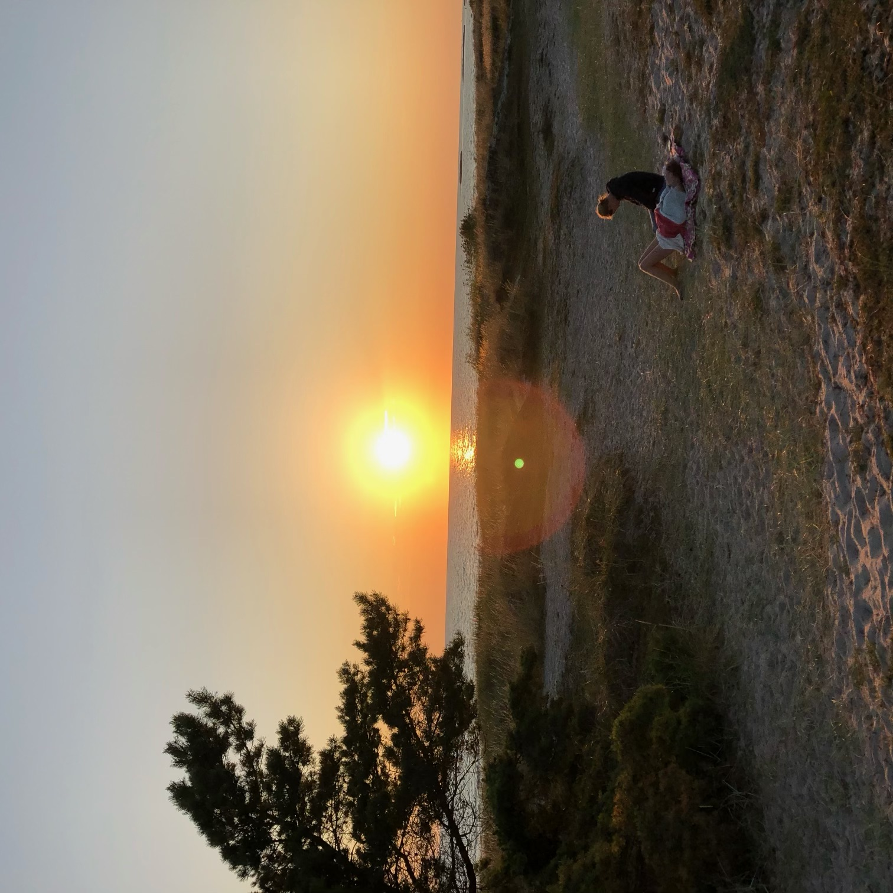
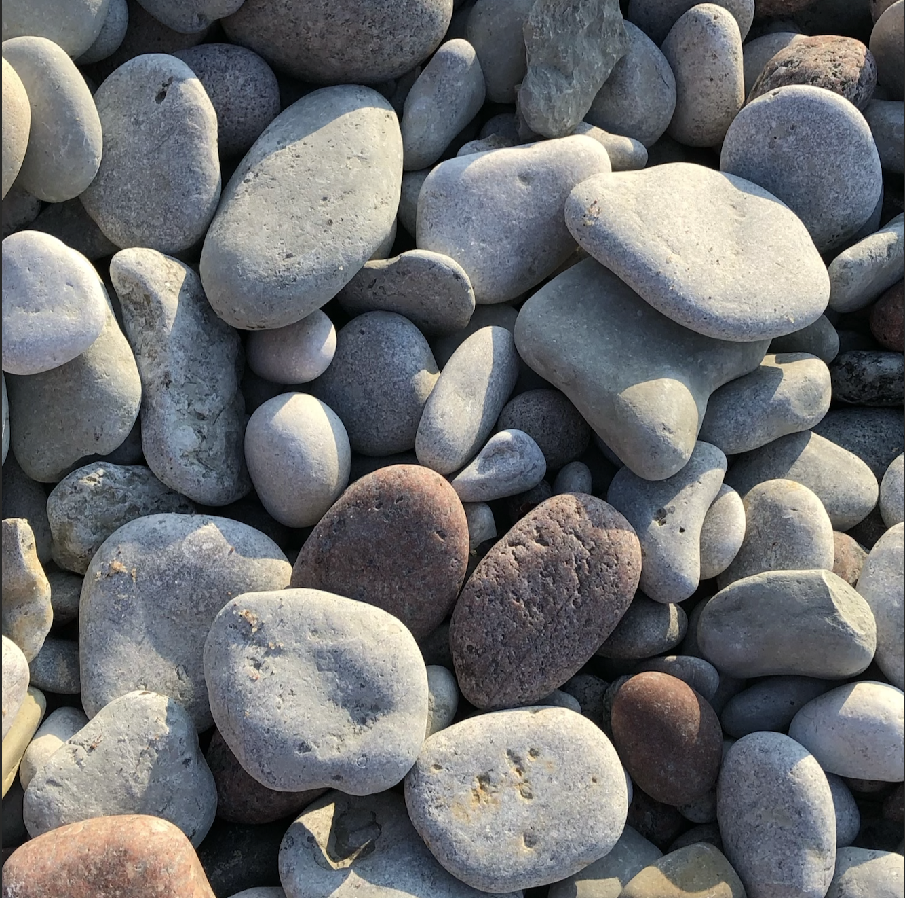
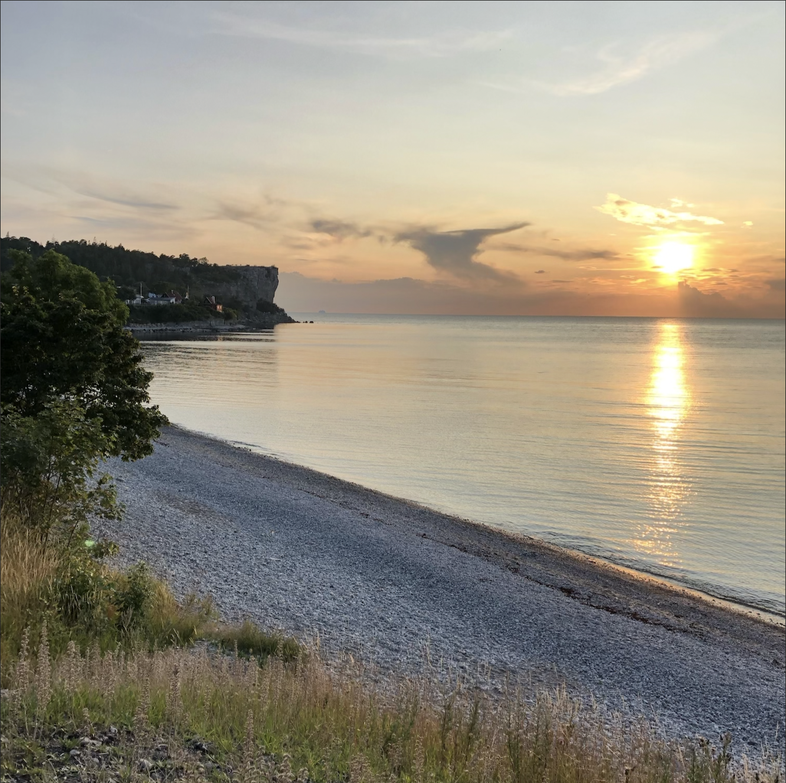

Här har jag samlat några tips på stränder du borde besöka på Gotland!

Det här är en av dem populäraste långgrunda sandstränderna på Gotland, perfekt att ta med sig familjen eller ditt kompisgäng dit en solig dag.
Här kan du svalka av dig genom att köpa en glass i glasskiosken, du behöver inte heller ta med matsäcken för här kan du äta på beachklubben eller
i några av foodtrucksen som finns på området.
Om du vill ha variation från alla sandstränder som finns på ön, kan du dra hit! Det är nämligen en stenstrand söder om Visby och det är en strand
som jag tycker är perfekt för kvällsbad. Här ska man inte bada i hårt väder för det blir starka undervattensströmmar. Stranden ligger precis under
Högklints naturreservat och du kan se Visby hamn härifrån om du tittar riktigt noga.


